Las imágenes se han renderizado y adaptado para esta estantería con Blender. Aquí reconocemos a sus creadores.
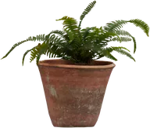
monstera
Fern 02 · Rob Tuytel, Rico Cilliers (CC0), Planter Pot Clay · Amal Kumar (CC0)
Planta tropical
Potted Plant 02 · Rico Cilliers (CC0)
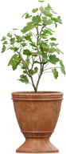
Planta de interior
Potted Plant 01 · Rico Cilliers (CC0)
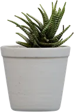
Suculenta
Potted Plant 04 · James Ray Cock (CC0)
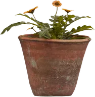
Flores silvestres
Flower Gazania · James Ray Cock, Jenelle van Heerden (CC0), Planter Pot Clay · Amal Kumar (CC0)
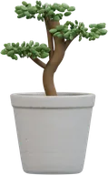
Bonsái
Potted Plant 04 · James Ray Cock (CC0)
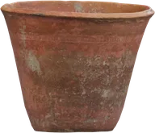
Maceta terracota
Planter Pot Clay · Amal Kumar (CC0)
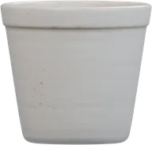
Maceta cerámica
Potted Plant 04 · James Ray Cock (CC0)
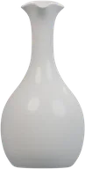
Jarrón alto
Ceramic Vase 01 · James Ray Cock (CC0)
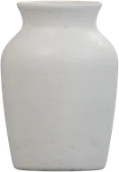
arch
Ceramic Vase 02 · James Ray Cock (CC0)
Vela
Brass Candleholders · Tina (CC0)
Tres velas
Brass Candleholders · Tina (CC0)
mug
Desk Lamp Arm 01 · Yann Kervran, Kuutti Siitonen (CC0)
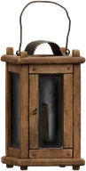
moon
Wooden Lantern 01 · James Ray Cock (CC0)
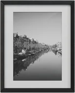
Marco pequeño
Standing Picture Frame 01 · James Ray Cock (CC0)
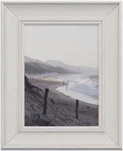
Marco de paisaje
Standing Picture Frame 02 · James Ray Cock (CC0)
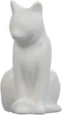
Gato de cerámica
Concrete Cat Statue · Rico Cilliers, Riley Queen (CC0)
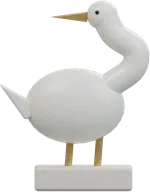
Pájaro
Modelado original de Entre páginas
Luna
Modelado original de Entre páginas
Estrella
Modelado original de Entre páginas
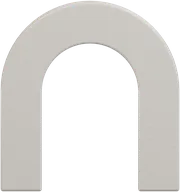
portrait
Modelado original de Entre páginas
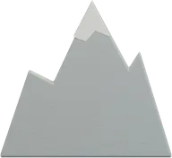
Sujetalibros montaña
Modelado original de Entre páginas
Separador dorado
Modelado original de Entre páginas
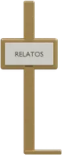
Separador con etiqueta
Modelado original de Entre páginas
Reloj
Mantel Clock 01 · Yann Kervran, Rico Cilliers (CC0)
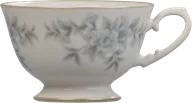
Taza de té
Tea Set 01 · James Ray Cock, Rico Cilliers, Jurita Burger (CC0)
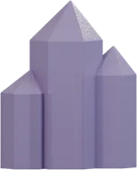
star
Modelado original de Entre páginas